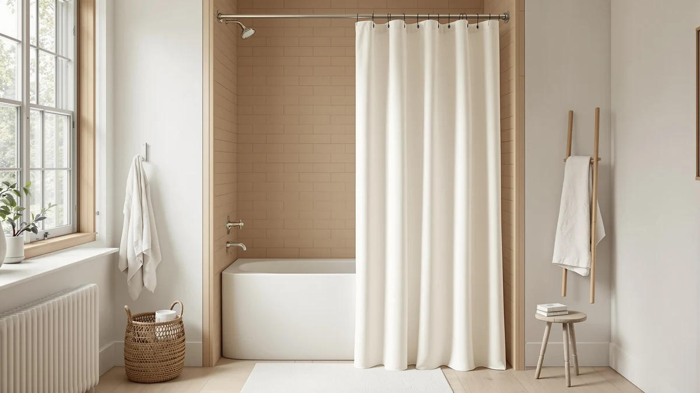

Bean Products Natural Cotton Shower Stall Curtain Liner Review (2026): Worth It?
Prices and picks verified as of November 2026. Independent, reader-supported reviews.


Quick Answer
This Bean Products Natural Cotton Shower Stall Curtain Liner review compares its 100% cotton build, 54 by 72 inch size, and $45.45 price against three linen alternatives from ANRODUO and BTTN. Shoppers who want a plastic-free liner sized for a shower stall rather than a full tub get the closest match here, while anyone who prefers a linen look or a larger cut should compare the alternatives below.
Our pick: Bean Products Natural Cotton Wide, $45.45 Check Price on Amazon
Bottom line: our top pick is the Bean Products Natural Cotton Wide Shower Stall Curtain Liner at $45.45.
Things to Know Before You Buy
- The Bean Products Natural Cotton Wide liner is built from 100% cotton with no vinyl or PEVA, so it will not seal out water the way a typical plastic liner does.
- At $45.45, it sits in the middle of this comparison, cheaper than ANRODUO's Brown Extra Long Linen at $47.99 but more expensive than BTTN's Boho Scalloped Linen at $36.99 and ANRODUO's Sage Green Extra Long at $35.99.
- It ships in a single 54 inch by 72 inch size, a cut built for a shower stall rather than the wider tubs some of the linen alternatives are sized for.
- The three alternatives compared here are linen, not cotton, so material is the main difference to weigh alongside size and price.
- None of the four listings publishes a star rating or review count, so there is no third-party track record to lean on beyond the material, size, and price comparison in this review.
This Bean Products Natural Cotton Shower Stall Curtain Liner review puts the liner's 100% cotton build, $45.45 price, and 54 by 72 inch size next to three linen alternatives shoppers often weigh against it: ANRODUO's Brown Extra Long Linen, BTTN's Boho Scalloped Linen, and ANRODUO's Sage Green Extra Long. Cotton liners like this one trade the sealed, waterproof surface of vinyl or PEVA for a breathable fabric that many shoppers choose specifically to avoid plastic in the bathroom. That tradeoff decides whether you need a separate liner behind it and how it stacks up against linen curtains that handle water, size, and price differently.
We built this comparison from the product listings, current Amazon pricing, and the material and size specifications each brand publishes for its own curtain or liner. None of the four options here lists a star rating or review count, so size, material, and price carry more weight in this comparison than they would for a product with an established review history. The Bean Products Natural Cotton Wide lands in the middle of the price range at $45.45, cheaper than ANRODUO's Brown Extra Long Linen but more than BTTN's Boho Scalloped Linen and ANRODUO's Sage Green Extra Long. A reader who wants cotton specifically can stop there; a reader open to linen, or chasing a different size, needs the detail in the sections below.
Why You Should Trust Us
Ilane Tall has covered bathroom fixtures and shower hardware for Best Shower Curtains since the site launched, and this Bean Products Natural Cotton Shower Stall Curtain Liner review follows the same research process used across the site: comparing manufacturer listings, current pricing, and published specifications rather than running a physical testing lab. We do not own a lab, and we do not claim hands-on use of any liner or curtain we cover, including this one. Instead, we pull the dimensions, materials, and prices straight from each retailer listing, then compare them against the other options a shopper is likely to consider at checkout. The full methodology behind every review on this site lives on our how we research page, and we followed that same approach here, from the price comparison through the final verdict.
How We Compared
Our process for this Bean Products Natural Cotton Shower Stall Curtain Liner review starts with each brand's own listing: material, dimensions, and price, cross-checked against the three comparison products on the same criteria. None of the four listings publishes a star rating or review count, so we weighted the comparison toward verifiable facts, material composition, exact size, and current price, instead of leaning on review volume that simply is not there for any of them. We did not purchase, install, or hang any of the four products ourselves. Cotton liners are a small niche among shower curtain liners because they skip vinyl and PEVA entirely, and that material choice is what separates this Bean Products pick from the three linen alternatives in this comparison.
Overview & Specs

Bean Products Natural Cotton Wide
What we like
- 100% cotton construction with no vinyl or PEVA, a plastic-free alternative to typical shower liners
- 54 inch by 72 inch size built for a shower stall, so there is no oversized fabric to trim or tuck
- A breathable fabric that avoids the sealed, humid feel of synthetic liners between uses
Flaws but not dealbreakers
- The listing does not publish a star rating or review count, unlike more established curtains reviewed elsewhere on this site
- At $45.45, it costs more than two of the three linen alternatives compared here
| Material | 100% cotton |
| Size | 54"W x 72"L (Pack of 1) |
Bean Products builds this liner around a single material choice: 100% cotton, with none of the vinyl or PEVA found in most shower curtain liners. Everything else about the liner follows from that one decision. Cotton breathes in a way sealed plastic cannot, so the liner will not trap the same humid, clingy feel against skin that some PEVA liners develop between washes. It ships in one size, 54 inches wide by 72 inches long, a cut sized for a shower stall rather than a full bathtub, which covers a narrower opening without requiring a custom trim. At $45.45, it sits in the middle of the price range in this comparison, costing less than ANRODUO's Brown Extra Long Linen at $47.99 but more than BTTN's Boho Scalloped Linen at $36.99 and ANRODUO's Sage Green Extra Long at $35.99. That price spread is worth weighing before buying, since the three alternatives swap in linen instead of cotton rather than offering the same material at a different size.
The tradeoff for skipping plastic is water resistance. Cotton alone does not seal out water the way vinyl or PEVA does, so most shower stalls will still want a liner or curtain behind this one to keep splashed water off the floor, which is a different setup than a typical single-liner shower. Cotton liners share this same limitation as a category, and shoppers choose them anyway when avoiding plastic matters more than having a fully sealed barrier. The listing does not publish a star rating or review count, which means this Bean Products Natural Cotton Shower Stall Curtain Liner review has less third-party feedback to draw on than a product with an established sales history. For a shower stall where a plastic-free liner is the priority and the size needs to stay compact, this liner gets the one spec that matters most right. Shoppers open to a linen look, or chasing a lower price, should compare the three alternatives below.
What We Liked
The clearest strength of the Bean Products Natural Cotton Shower Stall Curtain Liner is what it leaves out. No vinyl, no PEVA, nothing synthetic touching the water, only cotton. That single choice appeals to shoppers who specifically want plastic out of their bathroom and are willing to trade some convenience for it. The 54 by 72 inch size also matches a shower stall opening rather than a wider tub, so shoppers with a compact bathroom can order it without hunting for a custom cut. Compared against the three linen alternatives in this review, the Bean Products liner holds its own on price too, landing below ANRODUO's Brown Extra Long Linen while still delivering the plastic-free cotton construction that none of the linen options offer. For a reader who has already decided that cotton beats linen for this use, that combination of fit and material is hard to match.
What Could Be Better
Size is the clearest limit. At 54 inches wide, the Bean Products Natural Cotton Shower Stall Curtain Liner fits a shower stall but will not stretch across a wider tub the way ANRODUO's Extra Long linen curtains or BTTN's 108 by 72 inch Boho Scalloped Linen can. A shopper furnishing a bathtub rather than a stall will need one of those three instead. Cotton also is not a waterproof fabric on its own, so this liner needs a partner liner or curtain behind it in most bathrooms, which adds a step and a cost that a single all-in-one plastic liner would not require. On top of that, none of the four listings compared here publishes a star rating or review count, so this review has no verified buyer feedback to weigh against the linen alternatives or against general expectations for cotton liners as a category. None of these issues makes the liner a poor choice, but they are the factors a shopper should weigh before buying.
Who Is It For?
The Bean Products Natural Cotton Shower Stall Curtain Liner fits a shopper who has already decided that plastic has no place in their shower and is willing to add a separate waterproof layer to get that. It suits a shower stall specifically, since the 54 by 72 inch cut is built for that narrower opening rather than an oversized tub. It is a reasonable match for a bathroom where natural materials matter more than convenience, and less of a fit for a wider tub or a household that wants a linen look instead. Shoppers who need more width or length should compare ANRODUO's and BTTN's linen alternatives below before buying. Anyone furnishing a bathroom who wants pattern as well as fabric variety might also browse our best cotton shower curtains roundup for more options beyond these four.
Alternatives to Consider
If the Bean Products liner's stall-width size rules it out, these three alternatives cover a wider scalloped linen curtain and two extra-long linen options from ANRODUO. All three swap cotton for linen, so switching between them is mostly a question of size, color, and how much you want to spend rather than a jump to a different kind of product. None of them changes the core tradeoff of needing a separate waterproof layer behind a fabric curtain.

Premium Choice
ANRODUO Brown Extra Long Linen
At $47.99, ANRODUO's Brown Extra Long Linen costs about $2.50 more than the Bean Products liner and swaps the plain cotton weave for an extra-long linen cut, a straightforward option for shoppers who want a longer drop and don't mind paying a little more for it.
$47.99
Check Price on Amazon
Also Great
BTTN 108x72 Boho Scalloped Linen
BTTN's 108 by 72 inch Boho Scalloped Linen costs $36.99, roughly $8.50 less than the Bean Products liner, while covering a much wider tub opening and adding a scalloped hem that the plain cotton stall liner does not offer.
$36.99
Check Price on Amazon
Best Value
ANRODUO Sage Green Extra Long
ANRODUO's Sage Green Extra Long is the cheapest option in this comparison at $35.99, about $9.50 less than the Bean Products liner, and gives shoppers who want an extra-long linen curtain in a muted green the lowest price of the four.
$35.99
Check Price on AmazonFrequently Asked Questions
Does the Bean Products Natural Cotton Wide liner need a separate liner behind it?
Cotton alone does not seal out water the way vinyl or PEVA does, so most bathrooms still pair a cotton liner like this one with a liner or curtain that can handle direct splash. The Bean Products Natural Cotton Wide skips plastic entirely, which is the tradeoff for the breathable, natural feel it offers over sealed synthetic liners.
What size is the Bean Products Natural Cotton Wide shower stall curtain liner?
It measures 54 inches wide by 72 inches long, a cut sized for a shower stall rather than a full bathtub. ANRODUO and BTTN sell longer and wider linen curtains for shoppers who need a bigger fit, which this comparison includes below.
Is the Bean Products Natural Cotton Wide liner worth it compared to the ANRODUO and BTTN alternatives?
At $45.45, it costs less than ANRODUO's Brown Extra Long Linen at $47.99 and more than both BTTN's Boho Scalloped Linen at $36.99 and ANRODUO's Sage Green Extra Long at $35.99. Shoppers choosing between these four should weigh the cotton-versus-linen material difference first, since price alone does not separate this liner from the linen options.
Final Verdict
This Bean Products Natural Cotton Shower Stall Curtain Liner review comes down to material versus size and price. Bean Products charges $45.45 for a 54 by 72 inch cut built from 100% cotton with no vinyl or PEVA, while the three linen alternatives from ANRODUO and BTTN range from $35.99 to $47.99 and cover wider or longer openings. Shoppers who want a plastic-free liner sized specifically for a shower stall get that from the Bean Products Natural Cotton Wide, and no linen alternative here matches that exact material choice. Anyone furnishing a wider tub, or who prefers linen to cotton, should compare ANRODUO's Brown Extra Long Linen, BTTN's Boho Scalloped Linen, or ANRODUO's Sage Green Extra Long first. None of these four products asks for more than $48, so the downside of choosing wrong is a short wait for a return label, not a wrecked budget.